Candidate List 20260402 Previous Day Next Day Section 1: New Sources (age<1d) Cosmological Afterglow
Section 2: Old (1-5d) sources observed last night placeholder
Section 1: New Afterglow/FBOT Cands Last Night (3)
1. ZTF26aaqxhgb (Afterglow?FBOT?) [Back to Top] [Share] [Trigger Swift] [Fritz ] [Lasair ]RA, Dec: 129.6565, 2.06056 8h38m37.56s, 2d 3m38.03sGalactic (l, b): 223.93471, 24.66867 ext(g-r) = 0.052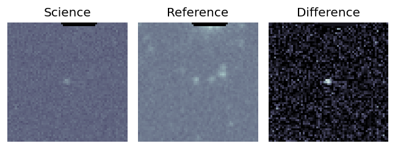
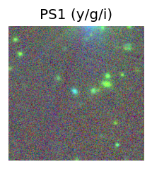
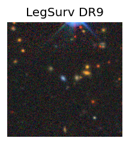
peak abs mag = -21.66 LegacySurvey: 1 sources in 3 arcsec Closest: d = 1.09 arcsec, 61.1 deg (east of north) photoz=0.07 (68% bounds 0.05, 0.1), type=EXP peak abs mag = -18.6 (68% bounds -17.88, -19.29) 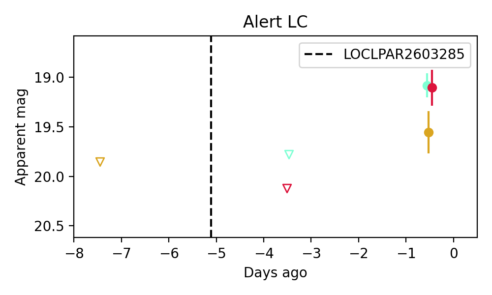
Consistent with synchrotron, g-r>0!
2. ZTF26aaqxolp (Afterglow?) [Back to Top] [Share] [Trigger Swift] [Fritz ] [Lasair ]RA, Dec: 182.71135, 66.92529 12h10m50.72s, 66d55m31.06sGalactic (l, b): 129.06305, 49.71694 ext(g-r) = 0.019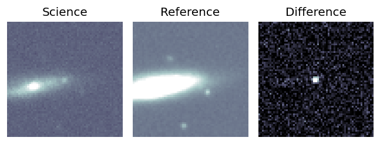
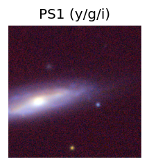
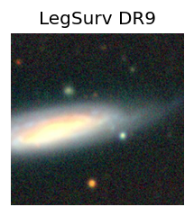
LegacySurvey: 1 sources in 3 arcsec Closest: d = 8.83 arcsec, 59.5 deg (east of north) photoz=0.04 (68% bounds 0.01, 0.13), type=REX peak abs mag = -17.43 (68% bounds -13.35, -20.32) 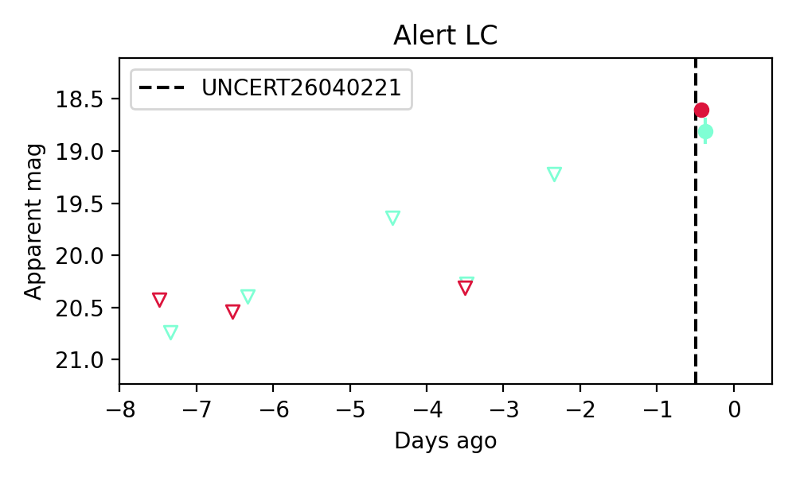
Consistent with synchrotron, g-r>0!
3. ZTF26aaqxpmm (FBOT?) [Back to Top] [Share] [Trigger Swift] [Fritz ] [Lasair ]RA, Dec: 172.22868, 21.10854 11h28m54.88s, 21d 6m30.73sGalactic (l, b): 226.21356, 70.261 ext(g-r) = 0.026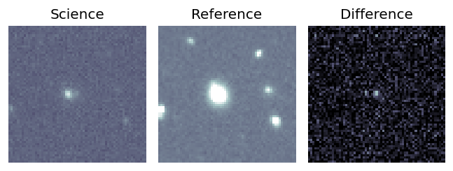
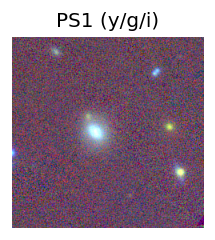
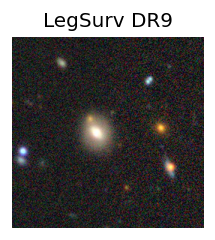
peak abs mag = -20.39 LegacySurvey: 1 sources in 3 arcsec Closest: d = 1.80 arcsec, 44.5 deg (east of north) photoz=0.45 (68% bounds 0.3, 0.61), type=SER peak abs mag = -23.38 (68% bounds -22.36, -24.15) 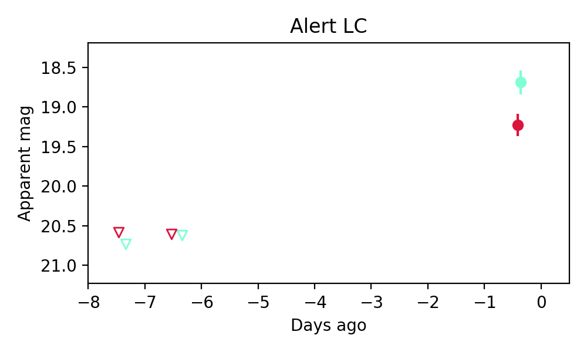
Section 2: Older Sources Observed Last Night (4)
0. ZTF26aaqudip (FBOT?) [Back to Top] [Share] [Trigger Swift] [Fritz ] [Lasair ]RA, Dec: 232.53919, 58.95373 15h30m9.41s, 58d57m13.42sGalactic (l, b): 93.41035, 48.06624 ext(g-r) = 0.013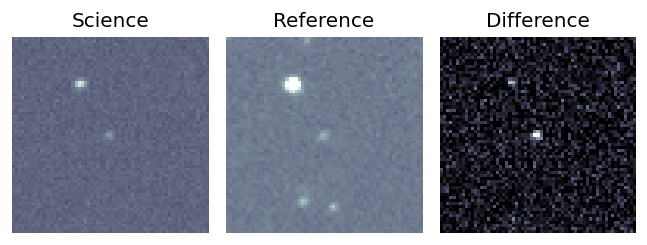
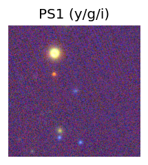
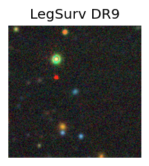
peak abs mag = -20.24 LegacySurvey: 1 sources in 3 arcsec Closest: d = 0.30 arcsec, 226.7 deg (east of north) photoz=0.18 (68% bounds 0.1, 0.25), type=EXP peak abs mag = -20.44 (68% bounds -18.94, -21.22) 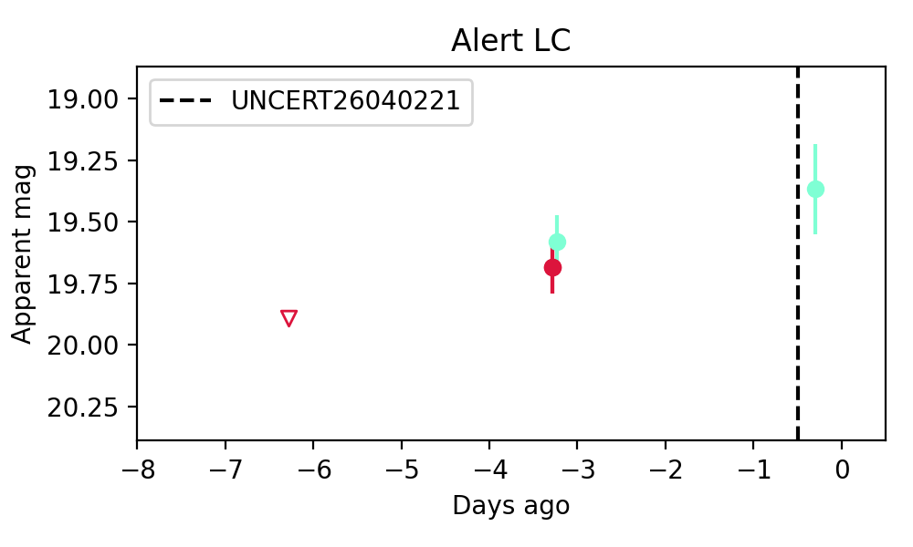
Consistent with synchrotron, g-r>0!
1. ZTF26aaqvojc (FBOT?) [Back to Top] [Share] [Trigger Swift] [Fritz ] [Lasair ]RA, Dec: 254.38828, 32.86199 16h57m33.19s, 32d51m43.18sGalactic (l, b): 55.06542, 37.14291 ext(g-r) = 0.028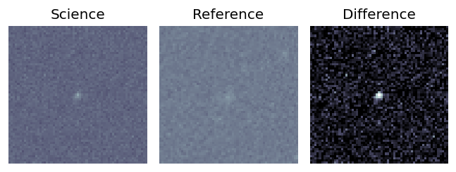
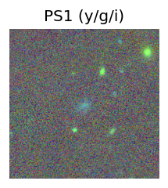
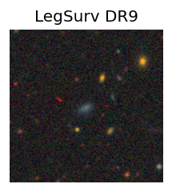
peak abs mag = -19.79 LegacySurvey: 1 sources in 3 arcsec Closest: d = 1.21 arcsec, 165.4 deg (east of north) photoz=0.07 (68% bounds 0.04, 0.12), type=EXP peak abs mag = -18.97 (68% bounds -17.68, -20.28) 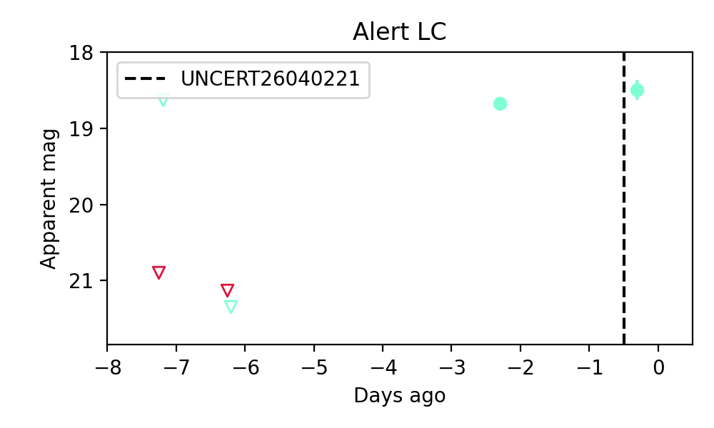
2. ZTF26aaqwaao (FBOT?) [Back to Top] [Share] [Trigger Swift] [Fritz ] [Lasair ]RA, Dec: 116.62769, 27.39003 7h46m30.65s, 27d23m24.10sGalactic (l, b): 192.97904, 23.44324 ext(g-r) = 0.043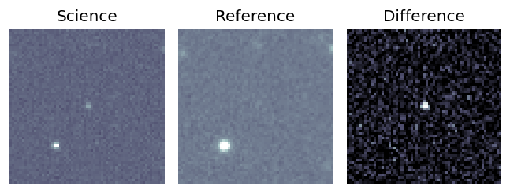
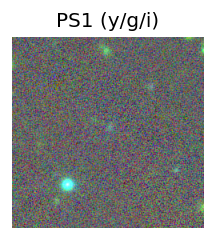
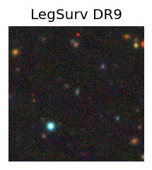
peak abs mag = -21.61 LegacySurvey: 1 sources in 3 arcsec Closest: d = 0.99 arcsec, 331.7 deg (east of north) photoz=0.2 (68% bounds 0.16, 0.31), type=EXP peak abs mag = -21.35 (68% bounds -20.75, -22.4) 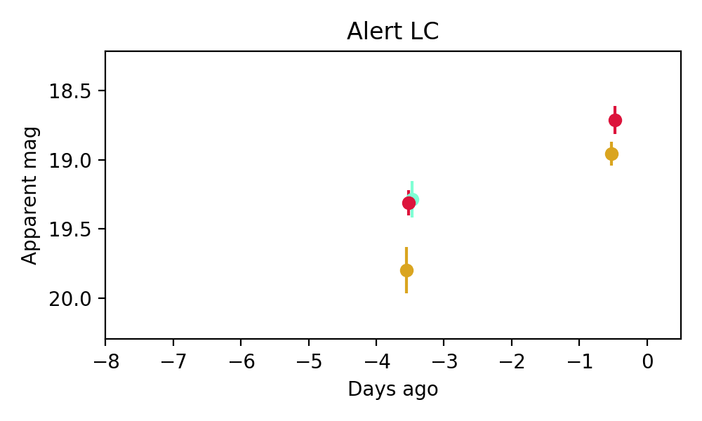
Consistent with synchrotron, g-r>0!
3. ZTF26aaqxind (Afterglow?) [Back to Top] [Share] [Trigger Swift] [Fritz ] [Lasair ]RA, Dec: 137.49121, 21.5603 9h 9m57.89s, 21d33m37.10sGalactic (l, b): 206.51621, 39.63958 ext(g-r) = 0.04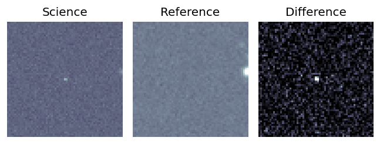
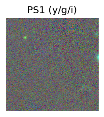
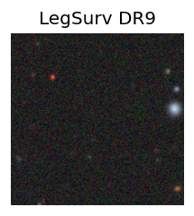
LegacySurvey: 1 sources in 3 arcsec Closest: d = 8.62 arcsec, 168.3 deg (east of north) photoz=0.94 (68% bounds 0.55, 1.35), type=REX peak abs mag = -26.5 (68% bounds -25.09, -27.47) 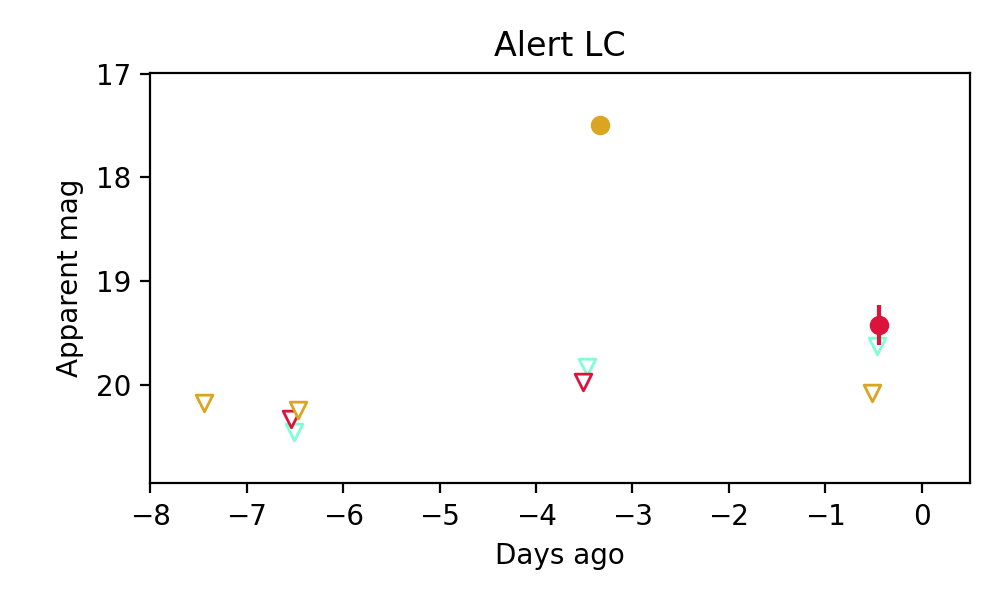